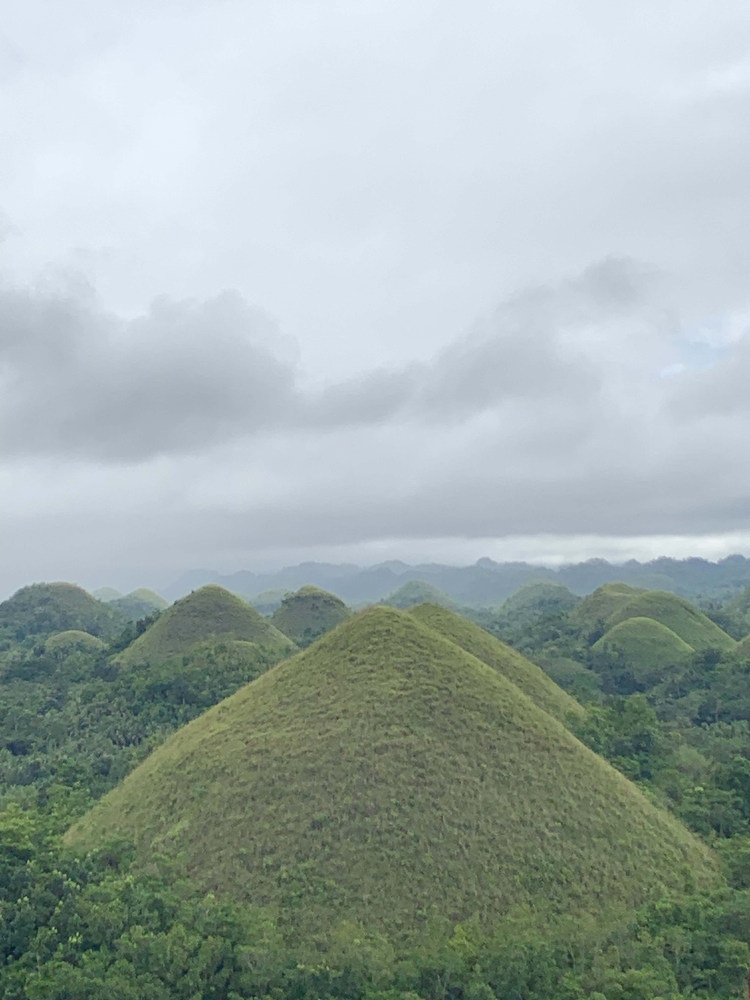
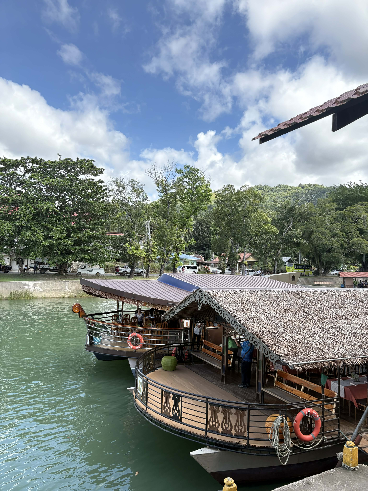
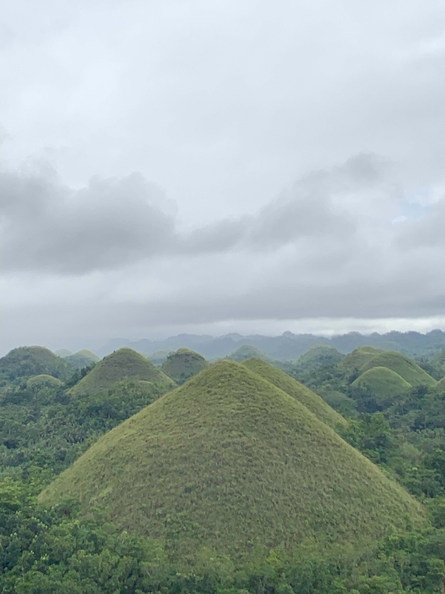
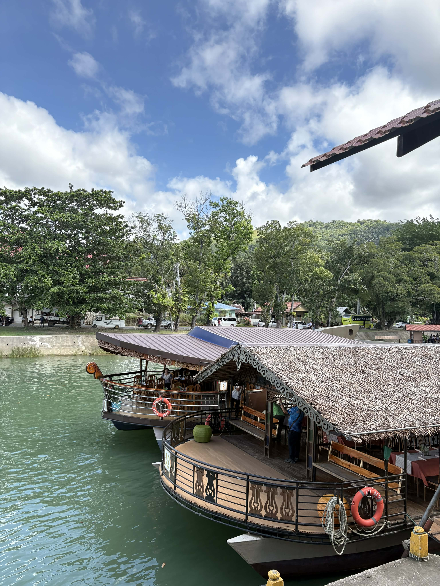

Side Trips

 




In addition to our company visits, we were able to enjoy several meaningful side trips that gave us
the opportunity to explore remarkable destinations, strengthen our bonds as a group, and create
lasting memories. We visited iconic places such as the Chocolate Hills, experienced a relaxing
river cruise, walked through the scenic Man-Made Forest, and explored historic churches in Cebu.
These activities provided the perfect balance between learning and leisure, allowing us to unwind
while appreciating the beauty and culture of each location.
These experiences reminded us that education extends beyond the classroom. Traveling to new
environments, immersing ourselves in nature and heritage sites, and sharing enjoyable moments
with our classmates contributed to our personal growth, teamwork, and overall inspiration
throughout the journey.
We are truly grateful for every destination we visited and every memory we created during these
side trips. They added joy, excitement, and a deeper sense of connection that made our entire
tour experience even more meaningful and unforgettable.